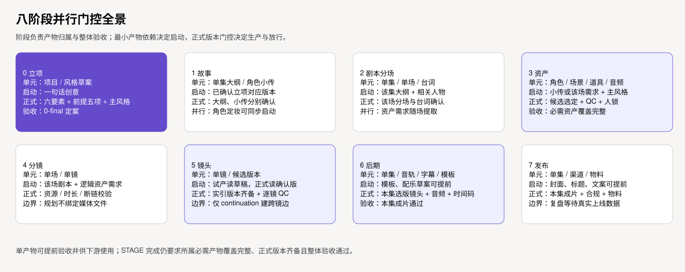
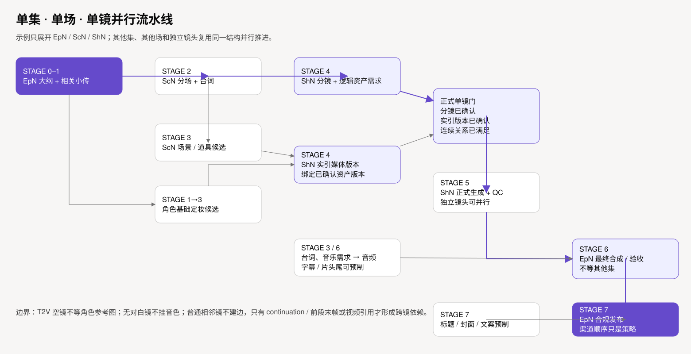
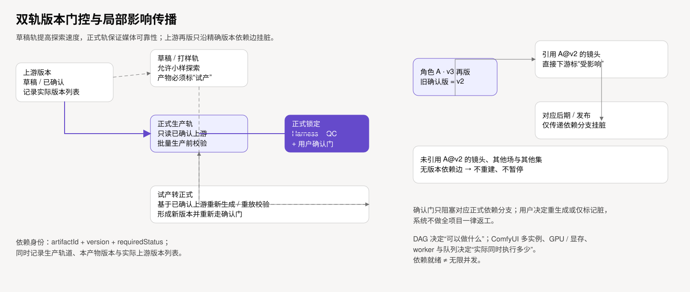

短剧 Agent 平台设计v1.22 · 2026-11-14
定位
§0 · 产品本质现状（2026-11-14）：任务包按八步模块分段编号（0xx–7xx + 8xx），已建 30 个，0–2 步已落地（含 feature-201 的 2-c 分镜文字稿，自动化通过、未真机验收），3–7 步完整生产闭环待实施；现存代码与新设计存在偏差处按现行任务包对照本设计对齐重建。当前线性状态与固定编排不视为目标全局锁，目标调度模型见 §2.1 / §7.1。
| 旧体系 | 本平台 |
|---|---|
| proj.py 状态机 + 子进程包装 | 多 Agent 消息总线 + 专职 Agent 协作 |
| 规范 md 为流程事实源 | 平台内置生产工作流 + Skill 体系，规范不再以外部 md 存在 |
| 命令行 check/advance/record | 画布内确认门卡片 + Harness 自动校验 |
| 项目状态.json / 验收规则.json 等旧格式 | 全新数据模型（见第 7 节） |
| 本地脚本 + 人工拼工具 | 本地优先 + 本地/局域网 ComfyUI 统一媒体引擎（H3 Image 图像 / H3 视频 / Music3 音乐，全部权重推理，媒体零公网），一键闭环（v1.7 执行路径，v1.22 / D-033 图像通道修订） |
旧《AI短剧工作台系统设计》v1.1 曾作历史参考，该文档已于 2026-10-09 删除，不再指导开发。
0.1 开发原则与边界条件 (v1.3 设立，v1.22 现行；2026-10-04 用户拍板，D-033 修订图像通道)
设计原则
§1 · 8 条五段式使用体验与八步生产依赖
§22.1 八步里程碑、产物依赖 DAG 与双轨版本门控 v1.21 · D-031 / D-032
八步业务闭环回答“产物归属哪个阶段、该阶段何时整体验收完成”，不规定所有任务的全局启动顺序。主控 Agent 与系统调度器以具体任务的最小产物依赖建图；只有真实依赖未满足的任务等待，无依赖或依赖已满足的任务可跨 STAGE 并行。依赖粒度细到角色、场景、场次、镜头或单集，不以整个 STAGE 为前置单位。
八阶段并行门控全景
调度单位下沉到项目、单集大纲、单角色小传、单资产、单场、单镜头、单条音轨、单集后期和单渠道发布包。依赖就绪与资源调度分离：DAG 决定“可以做什么”，ComfyUI 多实例、GPU / 显存、worker 与队列决定“实际同时执行多少”；依赖就绪不等于无限并发，也不等于自动正式生产。

可编辑总图：Whiteboard HTML · Excalidraw 源。三张 SVG 与总图使用同一组图元定义，供 A / B 类文档直接阅读。
STAGE 0–7 完整启动、并行、验收与再版矩阵
| 阶段 | 最小调度与验收产物 | 真实硬依赖 | 可提前准备 / 并行工作 | 草稿试产 → 正式生成 / 锁定 / 放行 | 单产物验收 vs 阶段整体验收 | 上游再版的精准影响 |
|---|---|---|---|---|---|---|
| 0 立项 | 项目立项单、选题诊断、故事前提、主视觉风格草案；项目级 0-final | 用户创意与诊断所需资料；正式基线须具备六要素、故事前提五项和主风格 | 选题诊断、故事前提、主视觉风格草案可并行收敛，不等完整剧本 | 草稿可供故事与风格探索；正式下游基线只读经用户确认的 0-final | 诊断、前提、风格草案可分别确认；STAGE 0 完成须正式产物齐备并通过 0-final | 核心前提 / 主风格再版只影响显式引用对应立项版本的下游；普通元数据修改不触发生产链返工 |
| 1 故事 | 单集大纲、单角色小传及其确认版本 | 对应立项版本；单集大纲依赖故事前提，角色小传依赖相关人物设定 | 各集大纲、各角色小传可分校验并行推进；基础角色定妆只需相关小传与主风格，可与剧本分场并行 | 草稿大纲 / 小传可供剧本或定妆试产；正式该集剧本读已确认该集大纲，正式角色定妆读已确认该角色小传与主风格 | 单集大纲、单角色小传可分别确认并供下游；STAGE 1 完成仍须全剧必需集与角色覆盖完整 | 角色小传再版影响该角色资产及显式引用版本的剧本 / 分镜 / 镜头；单集大纲再版只影响该集显式下游 |
| 2 剧本分场 | 单集剧本、单场分场、单场台词、随场提取的资产需求项 | 该集大纲及该场涉及的人物小传 | 独立集、独立场并行；分场、台词和资产需求随场推进；基础资产先行，特殊服装 / 场景 / 道具需求后补 | 草稿可供分镜、资产需求与配音草案试产；正式对应分镜、资产和音频任务只读该场已确认分场与台词 | 单场确认即可供对应下游；STAGE 2 完成须全集、全场及必需台词覆盖完整并通过整体验收 | 单场再版只影响该场资产需求、分镜、音频及其传递下游，不误伤其他场 |
| 3 资产 | 单角色 / 场景 / 道具 / 音频资产及其候选、正式版本 | 角色基础定妆依赖小传与主风格；场景 / 道具依赖对应场需求与主风格；音频依赖台词或音乐需求；生成依赖可用 ComfyUI 实例、权重与工作流 | 角色、场景、道具、音频四分支并行；逻辑 ID、提示词、候选小样和实例探活可提前 | 草稿设定可生成试产小样；正式媒体生成只读已确认设定与主风格；候选选定、QC、人工锁定后形成正式资产版本，实引该版本方可放行 | 单资产锁定后可被实际引用；STAGE 3 完成须必需资产覆盖完整，未被某镜引用的候选不阻塞该镜 | 某资产某版本再版只挂脏实际引用该版本的分镜绑定 / 镜头及传递下游；未引用节点继续执行 |
| 4 分镜 | 单场分镜、单镜头规划、逻辑资产绑定、提示词、生成模式、时长与连续关系 | 该场已确认分场 / 台词及逻辑资产需求；实际媒体文件只在生产前校验；T2V 空镜无角色参考硬依赖 | 独立场、独立镜并行；可先绑定逻辑 ID、T2V / I2V / R2V 模式、提示词和时长，不等全部资产成图 | 草稿可供分镜预览与打样规划；正式生产门校验该镜分镜已确认、实引资源版本齐备、时长合理、绑定不断链、连续关系满足 | 单镜规划可分别确认并进入生产准备；STAGE 4 完成须必需镜头覆盖完整并通过连续关系整体验收 | 单镜分镜再版只影响该镜生产及其后期分支；连续关系变更只影响显式关联镜头 |
| 5 镜头 | 单镜生成任务、候选视频版本、QC 与选版 / 收片记录 | 该镜已确认分镜、实引媒体正式版本和可用 ComfyUI 资源；continuation 另依赖前段选定末帧 / 视频 | 独立镜头与多候选打样并行；普通相邻镜头没有天然先后依赖，不建立跨镜边 | 草稿依赖可生成标记为「试产」的候选；正式生成只读已确认上游与实际媒体版本；逐镜 QC、用户选版 / 收片后形成正式镜头版本 | 单镜选版即可进入所属单集后期；STAGE 5 完成须全剧必需镜头正式选版，但单集后期不等全剧镜头齐 | 选版镜头再版只影响所属单集后期与发布；被 continuation / 前段引用时，才传递影响显式后续镜头 |
| 6 后期 | 单集剪辑工程、字幕、音轨、调色 / 片头片尾模板、单集成片版本 | 最终合成依赖本集选版镜头、正式音频和实际时间码；模板与草案准备不依赖全部镜头 | 配乐草案、字幕模板、片头片尾、剪辑工程和调色测试可提前；各集后期并行 | 草案可预演；定时字幕、最终混音和最终合成只读本集正式选版及实际时间码；本集成片经 QC 与用户验收后锁定并放行发布 | 单条字幕 / 音轨 / 模板可分别验收，本集成片可独立验收；STAGE 6 完成须计划内全集正式成片齐备 | 本集后期再版只影响本集发布包；模板 / 音乐再版只影响显式引用项，不反向挂脏无关镜头 |
| 7 发布 | 单集发布包、单渠道物料、发布记录与复盘数据 | 上线依赖本集成片验收、合规通过和对应渠道正式物料；复盘依赖真实上线数据 | 封面、标题、简介、渠道文案和发布计划可提前；多渠道、多物料、独立单集并行 | 物料草稿可预审；正式发布只读已验收成片、合规结论与正式物料，经用户确认渠道和时间后放行 | 单物料、单渠道包可分别验收，本集可独立发布；STAGE 7 完成须计划内集 / 渠道完成并取得应有复盘 | 发布物料再版不反向挂脏制作上游；成片再版只影响对应集 / 渠道发布包；发布顺序只是渠道策略，不是制作依赖 |
- 可提前准备：可建立逻辑 ID、模板、提示词、需求与草稿，不代表允许正式媒体生成。
- 草稿试产：可读取已声明依赖的草稿或已确认版本，产物必须标记“试产”，不得冒充正式版本。
- 正式生成：实际读取的上游、媒体、权重 / 工作流与生成参数均满足正式门；仅就绪不自动触发批量生产。
- 正式锁定：形成新正式版本，并通过 Harness / QC 与用户确认门；试产转正式须重新生成或执行等价重放校验，不能只改状态。
- 单产物验收：某一集、场、角色、资产或镜头可独立确认并供其下游使用，不被同阶段其他产物阻塞。
- 阶段整体验收：所属必需产物覆盖完整、正式版本齐备且整体验收通过；它是汇总里程碑，不反向变成全局启动锁。
单集、单场、单镜主流水线

- 文本主路径按
EpN → ScN → ShN前进，其他集、场和独立镜头复用同一结构并行推进。 - 角色基础定妆从相关小传与主风格分支启动；场景 / 道具从对应场需求分支启动；两条资产分支在该镜实际引用处合流。
- 普通相邻镜头不建依赖边；只有
continuation、前段末帧 / 视频引用等显式关系才建立跨镜依赖。 - 后期与发布均按单集下沉，
EpN成片验收与合规发布不等待其他集，避免末端重新形成全剧串行锁。
关键任务最小前置速查（正式任务）
| 任务 | 最小前置 | 明确不必等待 |
|---|---|---|
| 角色概念 / 定妆 | 主视觉风格 + 该角色身份、年龄、外貌、基础服装等人物设定；正式定妆前概念方向已选定 | 完整剧本、完整分场、其他角色定妆 |
| 剧本分场 | 故事大纲 + 人物设定 | 角色 / 场景图片全部完成 |
| 场景 / 道具 | 主视觉风格 + 对应场次的场景 / 道具需求 | 全剧所有分场完成、其他场景 / 道具完成 |
| 分镜文字稿 | 对应场剧本 / 分场 + 所需资产的逻辑 ID / 引用需求 | 全部资产图片出完、其他场次分镜完成 |
| 单镜头生成 | 该镜分镜已确认 + 该镜实际引用资产版本已确认 / 锁定 | 其他镜头、其他集全部完成 |
| 后期准备 | 配乐、字幕模板、片头片尾与剪辑工程分别按自身依赖提前开始 | 全部镜头完成后才开始准备 |
| 发布物料 | 封面、标题、简介、渠道文案可按项目 / 单集口径提前制作 | 成片完成后才开始准备 |
| 最终合成 / 发布 | 本集所需镜头、音频、字幕齐备且成片验收通过 | 其他集全部完成 |
故事大纲提供角色气质方向，但不是每张定妆照的独立硬输入；特殊剧情服装可按对应场次后补，不阻塞基础定妆。分镜只绑定资产逻辑 ID / 引用关系，不等待图片全部生成；真正消耗媒体文件的任务才绑定具体版本。STAGE 3 整体完成仍要求全剧资产覆盖完整并通过验收，单个资产可提前制作、验收与锁定。
双轨版本门控与局部影响传播

artifactId + version + requiredStatus、生产轨道与产物版本，经 Harness 与确认门后方可作为正式下游输入。试产产物转正式不得只改状态标记，必须基于已确认上游重新生成或重放校验并重新走确认门。缺料时明确报告缺少哪个产物、哪个版本或哪种确认状态，不把“阶段未完成”笼统当作缺料。
阶段汇总与局部影响
| 阶段汇总状态 | 含义 |
|---|---|
| 未开始 | 尚无该阶段任务或产物 |
| 进行中 | 至少一个所属任务已启动，尚未满足整体验收条件 |
| 待验收 | 必需产物已齐备，等待阶段整体验收 |
| 已完成 | 必需产物覆盖完整，正式版本与整体验收均通过 |
| 部分受影响 | 上游再版使部分产物失效或待对齐，其余产物继续推进 |
STAGE 状态是所属任务的汇总结果，不是其他任务的统一启动锁。上游再版后，系统沿精确版本依赖边只挂脏直接及传递引用该版本的下游产物；未引用该版本的任务、其他角色 / 场次 / 镜头 / 单集及无关节点继续推进，不再把整个 STAGE 3–7 一并打回。
2.6 立项阶段（STAGE 0）详解 自研新增
总体模型：1 个入口动作 + 2 个节点 + 1 道定案门
入口动作→ ① 选题诊断
含六要素口径草案→ ② 故事前提
背景档案·对话收敛→ 🚪 立项定案门
就绪即发定案卡
- 一句话创意只是入口动作，不占节点；节点之间不是严格的单向门——用户随时可以回到任何已捕获内容上修改，Agent 在对话中同步更新。
- 入口动作同时反问关键分叉（商业短剧 / 个人纪念）；「已捕获口径」区从第一句话起持续可见、随时可改。
2.6.1 入口：一句话创意与反问机制
- Agent 先反问关键分叉，不直接开干。第一问是项目性质：商业短剧（要上平台，讲打法、合规）还是个人纪念（不以投放为目的）？这一问决定选题诊断与六要素草案的方向。
- 未回答前，能记录的先记录。从创意中可直接提取的事实（时间=2002、核心事件=相识、人物关系=夫妻）立即写入「已捕获口径」区，不等用户回答反问。
- 用户回答后（如「商业短剧」），Agent 带着补充口径进入节点①。
2.6.2 节点①：选题诊断（含六要素口径草案）
主控 Agent 基于已捕获口径检索同赛道公开数据，产出选题诊断卡；商业短剧与个人纪念走不同详略：
| 区块 | 内容 | 个人纪念口径 |
|---|---|---|
| 同赛道对标案例 | 案例名 / 平台 / 成绩 / 打法 / 启示 | 弱化为风格参考 |
| 用户洞察 | 赛道用户迁移方向 | — |
| 爆点 / 钩子模式库 | 先婚后爱 / 明撩暗撩 / 日常治愈 / 双向救赎 + 钩子工程 | 不强制 |
| 合规风险 | 备案分级、AI 融像 / 融声授权、平台审核 | 仅提示私人影像使用边界 |
| 结论 | 可做 / 不可做 / 需调整 + 打法与集数区间 | 直接判「可做」 |
诊断产出的同时，Agent 给出六要素口径草案（全部预填、全部可改，不再设独立的多 tab 立项单审批）：
| 要素 | 说明 | 2002 相识案例（纪念倾向） |
|---|---|---|
| 题材赛道 | 如「都市爱情（女频）」 | 青春 / 爱情·年代纪念 |
| 目标平台 | 抖音 / 小红书 / 红果，含定位（投流 / 种草 / 切片） | 待定（纪念用途） |
| 单集时长 | 建议主力时长 | 待定 |
| 集数 | 以内容定或设区间 | 待定 |
| 风格基调 | 故事氛围基调（叙事层，进情绪 / 氛围类提示词） | 千禧清新怀旧 · 温馨（2002 年年代氛围） |
| 画幅 | 按平台规则派生，必填 | 待定 |
风格是两个维度，互不替代、都影响下游提示词：
- 风格基调（上表，叙事层）：故事氛围基调，Agent 按故事内容定（如「千禧清新怀旧 · 温馨」），进情绪 / 氛围类提示词（分镜情绪、场景氛围）；
- 视觉风格设定（画面层，纳入
0-final定案版本，见 §2.6.4）：形态 × 主画风 × 质感配方 × L2 锚词，必须从《视觉风格谱系》选取，进概念稿 / 定妆 / 场景提示词 Base。
对齐《安妮的夏天》立项单 v3 口径：v1 风格基调（千禧清新怀旧 · 温馨）保留为故事氛围基调；v2 新增视觉风格设定（仿真人 · 拟真人·仿真人动漫 + 质感配方 euler / normal 20 步 CFG 2.5 + 锚点词），两者并存。
用户的处理方式是「看诊断 + 看草案，有倾向就让 AI 再调，具体要改什么直接说」——可以只改六要素，也可以只追故事前提，顺序自由。
2.6.3 节点②：故事前提（故事背景档案的形成方式）
故事前提不是 STAGE 1 的完整故事，也不是让用户填模板，而是进入故事创作前的准备性事实：时间、地点、人物基本信息、核心事件、本季边界。它以对话收敛的方式形成，沉淀为「故事背景档案」——人提供（或确认）的原始事实，是后续编剧的不可篡改依据。
故事前提最低门槛（暂定，开发中发现不够再议）：
| # | 项 | 最低要求 |
|---|---|---|
| 1 | 人物 | 主角身份 / 年龄（双方） |
| 2 | 时间 | 故事发生时间（如 2002 年） |
| 3 | 地点 | 故事发生城市 / 环境 |
| 4 | 核心事件 | 相遇方式一句话 |
| 5 | 边界 | 本季讲到哪（如第一季只讲相识） |
《安妮的夏天》实测事实即此形态：林夏 19 岁学金融不住校、陈默 22 岁父母离婚随父、单位距林家 2–3 公里、第一季 = 相识（01–11 集）。
2.6.4 视觉风格设定：双维度中的画面层
立项信息的风格由两个维度构成（见 §2.6.2）：风格基调（叙事层，六要素之一，进情绪 / 氛围提示词）与视觉风格设定（画面层，本节）。本节只讲视觉风格设定；它和风格基调互不替代——基调决定"讲什么氛围"，视觉风格决定"画面长什么样"，两者都写入下游提示词（基调进情绪 / 场景氛围词，视觉风格进概念稿 / 定妆 / 场景提示词 Base）。
视觉风格设定必须从系统级外部数据库《AI短剧制作视觉风格谱系》中选取（见 §8.3），Agent 不得凭印象自创画风——谱系历史预览可由 Qwen-Image 或 MiniMax H3 产生，原始媒体与内嵌参数继续作为证据保留；现行新增图像仅使用 MiniMax H3 Image（D-033），不重写历史来源。Agent 先按题材匹配一个，人可以改，立项后也可以改；改风格后按真实引用与版本依赖精准挂脏，不做全链路提示词一律重出。
| 轴 | 取值 | 语义 |
|---|---|---|
| 使用角色轴 | 主风格 ×1 | 全片唯一，= 家族 + 具体风格；任何时刻仅 1 个，后期可换但不能并存 |
| 辅助风格 0–1 个 | 按剧情需要挂的「气氛」（如都市剧挂悬疑气氛）；不挂亦可 | |
| 验证状态轴（谱系内标记） | 「主」 | 被真实项目（安妮的夏天）验证跑通的条目（11 项） |
| 「备」 | 已登记但未经项目验证的主风格候选（7 项）；主风格候选含全部主 + 备条目，选「备」风险自担（可能出不来效果） | |
| 形态轴 | A 写实影像 / B 青春治愈 / C 卡通 / D 类型氛围 等家族 | 仅用于谱系归类与检索 |
注意：谱系只管画风。年代（2002）、地域等事实作为内容进入提示词，不作为选择画风 ID 的依据（如「2002 年」不必然推出「年代胶片」画风）。项目数据中的风格引用记录为「风格 ID + 谱系版本」（如 A7 @ v1.46）；当前谱系版本 v1.46（2026-11-13；上一版 v1.45 / 2026-10-01）。
2.6.5 定案门：就绪判定与立项定案卡（v1.10 语义修订）
立项只有一道门，是就绪条件的客观判定，不搞逐产物审批。门后字段仍可改（见 §2.6.6），定案门的本质是"当前版本的落定"，不是"灵魂边界"。
满足后 Agent 主动发出立项定案卡 v(N+1)：
立项单.v(N+1).json 落盘，旧版 vN 留底，形成供已就绪下游读取的 0-final 正式基线；不构成 STAGE 1 或其他阶段的全局启动锁。用户在对话里说「行，开始讲故事吧」等同拍板，系统记录用户原话与定案卡版本号，效果与按钮完全一致。未就绪时 Agent 不发定案卡，而是明确指出缺什么。2.6.6 立项后的变更：全字段可改 + 影响评估 + 用户决策（v1.10 升级）
0-final 再版是正式依赖链上的版本门，不构成其他 STAGE 的全局启动锁；影响范围由真实字段引用与精确版本依赖决定。manifest.json 的 parentReference.briefVersion 筛选候选；目标通用 DAG 按真实字段引用与精确版本依赖追溯直接及传递受影响产物，列入"待对齐清单"，不按整个 STAGE 或全链路一律打回。.session.json，经 project:rename IPC 完成，不走 Agent 对话、不再版 brief、不进入生成类影响传播；标签 / 备注同样作为项目元数据由系统直改。触发入口（在 STAGE 0 步骤内的 v1.9 立项视图中可改；也支持在 STAGE 1+ 通过对话提出）：
- v1.9 立项视图：立项所有 L0/L1/L2 字段可编辑，底部"发布立项 v(N+1)"按钮（取代旧"立项完成"按钮的锁死语义）。项目标题 / 标签 / 备注走独立系统编辑，不使用本按钮。
- 对话方式：用户说"把集数改成 12 集" → Agent 改字段并提示"已记录，将在下次发布时落盘 v(N+1)"，用户口头/按钮拍板等价。
- 流程导航快捷入口（方案 A 左栏流程导航分区）：点 STAGE 0 步骤进入 v1.9 视图，步骤旁显示当前版本号 + 待对齐计数（
✓ v3/v1 ⚠️2）。 - 生产中实测反补：STAGE 3 资产规格不符、STAGE 4 分镜时长不匹配等实测问题，可在产出节点旁"反补到立项"按钮发起变更。
字段改动与影响范围映射（字段口径；具体阈值已随 feature-002 / feature-011 落地）：
| 字段分类 | 字段举例 | 可能影响的下游产物 |
|---|---|---|
| 项目标题 / 标签 / 备注 | 项目显示名 / tags | 仅项目元数据，由系统直改；不再版 brief，下游无感 |
| 集数 | episodeCount | 实际引用集数的分集规划、分场、分镜、后期与发布分支 |
| 单集时长 | episodeMinutes | 实际引用时长的剧本 / 分场、分镜时长与后期分支 |
| 画幅 / 比例 | aspectRatio | 实际引用画幅的资产规格、镜头分辨率与 ComfyUI 工作流参数 |
| 受众 / 题材 / 基调 | kind / audience / tone | 实际引用对应字段的诊断、故事、剧本或视觉风格选型分支 |
| 主风格 / 辅助风格 | style | 实际引用对应风格的提示词 base、资产与镜头风格分支 |
| premise 核心 | 故事前提 任意子项 | 实际引用对应子项的故事、剧本分场、角色及下游分支 |
"待对齐"语义：
- 受影响正式产物节点挂角标 ⚠️"基于 vN，与 v(N+1) 不一致"，hover 显示"哪个字段与新版本不符"。
- 节点不丢，不灰显，不阻止其他已确认产物与草稿继续编辑；仅使用旧版本上游的正式再生成 / 重生成被阻止，直到用户选择重生成或显式标记脏。草稿可继续试产。
- 当前 brief 实现以
parentReference: { briefVersion: vN, ... }留痕；目标通用 DAG 统一记录artifactId + version + requiredStatus，不将 briefVersion 冒称终态唯一血缘模型。 - 一次重新打开受影响正式产物编辑 = 触发"是否按 v(N+1) 重新对齐"二次确认。
历史版本与回滚：立项单全量保留 v1..vN（立项单.vN.json，项目根，每次发布生成一份，永不覆盖）；"查看历史"按钮 = 左右两栏 diff 视图（vN vs v(N+1)）+ 任选历史版回滚；回滚 = 新发一版 立项单.v(N+1) = 立项单.vK 的内容。
STAGE 0 步骤的视觉（方案 A 左栏流程导航 + titlebar 进度轨）：
| 状态 | 流程导航步骤显示 | titlebar 进度轨步骤显示 |
|---|---|---|
| 立项未完成 | 跳动 STAGE 0 | STAGE 0 灰底 |
| v1 已发布 · 全对齐 | ✓ v1 绿色 | 0 灰 + tooltip "v1 · 7 产物已对齐" |
| v1 已发布 · 有未对齐 | v1 ⚠️2 黄色 | 0 灰 + tooltip "v1 · 5 产物已对齐 · 2 待处理" |
| v3 当前最新 | ✓ v3 绿色 + hover 历史 v1→v2→v3 | 0 绿 + tooltip "立项 v3 · 全对齐" |
详见 §2.6.7 影响评估机制、§2.6.8 画布布局与界面对应。
2.6.7 影响评估机制：追溯算法、面板与处理动作（v1.10 新增，v1.17 修订）
parentReference.briefVersion 当作终态唯一血缘模型。- diff 提取：对比
立项单.vN.json与立项单.v(N+1).json，得到变更字段集合 Δ = {集数: 8→10,主风格: A7→A3, ...}。 - 依赖图反向遍历：当前 brief 专用实现从
manifest.json的nodes[*].parentReference出发，筛选parentReference.briefVersion == vN的候选产物；目标通用 DAG 按真实字段引用及精确版本依赖计算直接和传递受影响分支，不将整个 STAGE 或全链路一律打回（§2.1 / §7.1）。 - 影响字段命中：对每个候选产物，比对其
parentReference.fields[*]与 Δ 的交集；非空 = 受影响，加入"待对齐清单"。 - 影响分级：按变更字段和实际引用关系分为高 / 中 / 低；不因同属某个 STAGE 就默认整级受影响。
- 清单落盘：写入
影响清单.vN-v(N+1).json（项目根；含时间戳、改动字段、影响产物列表、分级、用户最终决策），供回溯与 Harness 校验。
| 级别 | 触发条件 | 视觉 | 默认动作 |
|---|---|---|---|
| 高 | premise.* / style.primaryStyleId / style.catalogVersion / aspectRatio 改动，且存在实际受影响引用 | 红色 ⚠️ 必重生成 | 一键重生成（勾选默认） |
| 中 | episodeCount / episodeMinutes / seedTagline / kind / 诊断字段 / 辅助风格 / 题材 / 平台等改动，且存在实际受影响引用 | 黄色 ⚠️ 建议重生成 | 仅标记脏（需用户勾选才重生成） |
| 低 | 项目标题 / 标签 / 备注等系统元数据 | 灰色 · 无生成类影响 | 系统直改，不进入 brief 再版与影响清单 |
影响评估面板 UI 草图（保存并成功落盘后自动弹出；两个业务动作之外可经 Esc / 关闭控件退出，不阻断画布）：
parentReference 记录实际 artifactId + version + requiredStatus（当前 brief 实现同步写入 briefVersion）。禁止只修改 briefVersion 标签冒充对齐；未生成产物也按同一正式门生成。Agent 按依赖 DAG 串行 / 并行执行，进度实时回报。parentReference.briefVersion 仍为 vN；下次手动打开该产物编辑时，触发"按 v(N+1) 重新对齐"二次确认。其他已确认分支与草稿不被全局阻塞。脏读运行时表现：受影响正式产物使用旧立项版本生成，运行时照常；UI 顶部出现黄色提示条："当前基于 vN 立项，与最新 v(N+1) 不一致；点此查看差异 [查看影响评估] [一键对齐]"。Agent 引用产物时自动在提示词中追加"⚠️ 此产物基于 vN，与项目最新立项 v(N+1) 不一致"标记。不阻止其他无依赖产物与草稿继续创作——用户主权优先。
Harness 校验补充（§9 质量层联动）：影响清单 影响清单.vN-v(N+1).json（项目根）永久留底，下次发布 v(N+2) 时一并作为历史参考；用户选择"仅标记脏"超过 30 天未处理，Harness 给出"立项基线已漂移 N 天"提醒（不阻塞）。
2.6.8 画布布局与界面对应（原 §2.6.7 升级）
立项画布是一条线性收敛链（非 DAG），两个节点：
含六要素口径草案→ ② 故事前提
对话收敛·背景档案→ 🚪 定案卡
- 创意输入框与「已捕获口径」区为常驻元素，不画成节点。
- 选题诊断卡：对标 / 洞察 / 钩子 / 合规 / 结论可折叠，内嵌六要素草案（字段直接可改，不再设独立 tab 审批页）。
- 故事前提卡：对话驱动的结构化呈现（非空白富文本模板）；AI 先编的「假版本」与人确认的事实分色显示，事实带「不可篡改」水印。
- 视觉风格选型嵌在对话流与定案卡中：谱系条目可点选查阅，选中项显示风格 ID、主 / 备验证状态、谱系版本。
- Agent 主动行为：创意后立即反问 + 记录；诊断就绪自动出草案；前提卡住时主动追问缺口；就绪条件满足自动发定案卡。
与文档其他部分的对应：
- 数据模型（v1.13 按磁盘实况回流修订，2026-10-19）：项目根
manifest.json存六要素终值 + 风格引用（风格 ID + 谱系版本）+ 当前立项版本号briefVersion；项目根已捕获口径.json（立项对话中持续累积的事实库：来源 user/infer × 状态 confirmed/pending，feature-005）；项目根故事背景档案.md（人确认的原始事实）；项目根立项单.vN.json+立项单.vN.md双写（定案卡快照，含拍板方式与用户原话；选题诊断结论/明细并入diagnosisSummary/diagnosisDetail字段，不单独立项诊断文件；全量保留 v1..vN）；项目根影响清单.vN-v(N+1).json（改动 + 影响产物列表 + 用户决策）。每个下游产物节点parentReference: { briefVersion, fields[*] }记录生成时所用版本。 - 外部数据源：视觉风格谱系的路径注册与版本跟踪见 §8.3，与 ComfyUI 接入同级管理。
- Skill 沉淀：一次完整立项可沉淀为「赛道立项模板」Skill（口径取值 + 风格选型 + 对标案例）。
- Harness 校验：定案前校验就绪条件；校验风格锚词在提示词 Base 中一致出现、画幅口径在资产目录结构中落实、合规红线已标记。
- 与方案 A 左栏融合：立项画布（线性收敛链）与创作画布（DAG）共用三栏骨架；左栏"流程导航"分区与"资源库"分区顶部分段 toggle；STAGE 0 步骤显示立项版本号 + 待对齐计数。
- titlebar STAGE 进度轨：全局八步 0→7 进度环（详见 §3.1 与原型）；STAGE 0 步骤 hover tooltip 显示"立项 vN · X 产物已对齐 · Y 待处理"；点击切到 v1.9 立项视图。
界面设计
§3 · 三栏 + 顶栏 + 底条项目 / Skill / 资产 / 插件
Agent 对话流 · 工具轨迹 · 确认门卡 · 在岗状态
| 区域 | 内容 | 来源 |
|---|---|---|
| 顶栏 | 项目切换 · Skill 标识 · 模型选择器（自动匹配可手动）· 协作/导出 · 账号积分 | [Design 原有] |
| 左侧栏（约 260px） | 项目（项目库/任务地图）· Skill（广场/我的/模板）· 资产（角色/场景/道具/音色）· 插件 | [改编] |
| 中间画布 | 点阵背景上的节点与自动连线（阶段节点+产物卡）；缩放/平移/小地图；对齐吸附 | [Design 原有] |
| 右侧栏（约 380px） | Agent 对话流 · 工具调用轨迹 · 确认门卡片 · 多 Agent 在岗状态 | [改编] |
| 底部状态条 | 引擎连通性 · 批处理队列（已提交/完成/失败+镜号）· Harness 摘要 | [自研新增] |
/ 唤起 Skill，@ 指向资产节点；对话随项目本地持久化。多 Agent 架构
§4 · 摄制组Design 实测角色为 router / planner / executor / media-agent / comfyui-agent；本平台按短剧摄制组重划分。
实现层摄制组（磁盘实况，v1.12；调度边界见 D-023）：opencode profile 已安装 4 个——showrunner（唯一 primary 主控）+ writer / media-director / comfyui-operator（3 个 subagent）。仅 showrunner 持有 task，三个 subagent 均由它统一调度且自身不派 task；早期同名 director profile 已于 2026-10-14 退役（提交 8114e84）。上表 7 角色为目标态分工，随 STAGE 3-7 逐步扩编。
接收任务 → 检索上下文 → 规划 → 调 MCP 工具 → 自校验 → 回报/进确认门。无删除权，产物写新版本；不可逆动作必须经确认门。MCP 工具层与对话生成网关 改编
§5 · v1.12 磁盘实况5.1 对话生成网关（runtime 单轨）
对话与生成统一经 Agent 运行时单轨（runtime:*），不设预置"生成动作"业务 IPC / 工具——旧 8 个 agent:* IPC 与 shortdrama_* 生成工具已退役、不再重建（2026-10-09 用户拍板"不回退"）。诊断 / 选题 / 大纲 / 小传 / 分场 / 台词 / 分镜 / 改写等生成动作，全部由会话内 Agent 规划完成。
| 通道 | 职责 |
|---|---|
| runtime:start / stop / status | 运行时生命周期与状态（stopped / starting / running / error；首次业务访问惰性自启） |
| runtime:session:create / list / abort / delete | Agent 会话管理；会话声明可用 MCP 工具（tools[]） |
| runtime:prompt / prompt:async | 消息入会话，Agent 规划并调用工具；异步走事件流 |
| runtime:event:subscribe / unsubscribe | 事件流：text / reasoning / tool.call / structured 分轨，UI 可折叠展示 |
| 服务商与模型设置（feature-003） | 火山方舟 / LM Studio 二选一（D-021）；safeStorage 加密存 userData，LM Studio 本地 / 局域网免 Key，均需连接预检 |
artifactId + version + requiredStatus。缺料报告具体产物、版本或确认状态，不静默产出。runtime:* 单轨是调用通道，与生产双轨不冲突（见 §2.1 / §7.1）。INVALID_ARGUMENT / RUNTIME_NOT_READY / SESSION_NOT_FOUND / PROMPT_FAILED / UPSTREAM_AUTH_MISSING / PATH_ESCAPE_DENIED / GATE_TIMEOUT 等 14 个，见 electron/runtime/types.ts），经 envelope.error 透出；旧业务错误码（STORY_CTX_MISSING / REVISE_* / STYLE_NOT_IN_CATALOG）已随旧 IPC 退役。UPSTREAM_AUTH_MISSING；选择本地 / 局域网 LM Studio → 校验 baseUrl 与模型配置及连接，失败时报告具体网络或配置错误。两者均不静默切换另一服务商或降级 mock。5.2 工具族（MCP 网关：已落地 + 目标）
平台内置 MCP 网关（仅本机），工具以 schema 声明、统一鉴权审计。已落地（磁盘实况，29 个纯工具 / 11 族；物理 ID = shortdrama_<tool>）：
canvas.get / update / alignfile.list / read / writeasset.list / registerinstances / queue / statusgate.requestbrief.plan / publish / list / impact.assess / impact.commitmanifest.get / advancestyle.catalog / get / validateresources/H3-Style/）。capture.list / upsert / upsert_many / removeweb.search / fetchharness.validateshowrunner 请求级白名单放行其中 23 个；asset 2、comfyui 3 与 style.get 1 不在其列（29 − 2 − 3 − 1 = 23）。其中 asset / comfyui 工具由 subagent 持有，style.get 保留供系统侧 / 未来使用——writer 持文件/画布最小集，media-director 另持 asset 2，comfyui-operator 持 asset 2 + comfyui 3 全集。subagent 仅接受 showrunner 委派且自身不派 task；media-director 回交媒体任务交接物，由 showrunner 另行委派 comfyui-operator 执行引擎操作。client 层取消 shortdrama_ 前缀整体放行，逐物理 ID 判定（v1.12）。
目标族（随 feature 包逐步落地，§11 路线）：
project.manifest / events / timeline：元信息、事件流、任务地图。engine.list / workflows / queue / history：ComfyUI 探活、媒体工作流模板装载；H3 Image 图像节点、H3 视频节点、Music3 音频节点。Qwen 生产图由 D-033 停用归档，历史作业仅按既有 promptId 续查。asset.query / select / import / export：检索、选定、导入导出。edit.cut / subtitle / concat / mix / slice：MediaKit/FFmpeg 程序化剪辑。harness.rules / verify / report：规则、校验、结构化报告。skill.list / run / save / publish：检索、执行、沉淀、投稿。安全：参数白名单；路径限定项目目录内，禁越界；敏感工具强制确认令牌。 [自研新增]
Skill 与插件
§6数据模型（全新） 自研新增
§7 · 终态目录项目名/ ├─ project.manifest.json # 元信息/集数/画幅/风格/采用决定/确认门状态 ├─ 故事/ # 大纲·小传（md + json） ├─ 剧本/ # 分场·台词（md + json） ├─ 资产/ 角色/ 场景/ 道具/ 音色/ + asset.index.json ├─ 分镜/ shotlist.json # 镜号/景别/角色/动作/台词/时长/参考 ├─ 镜头/ <镜号>/ # 多档位多版本 mp4 + 参数 json ├─ 声音/ # 配音 wav、配乐、音效 ├─ 时间线/ timeline.json # 采用版本、切点、字幕、混音 ├─ 成片/ # 成片、封面、切片 └─ events.log # Agent 消息与决策事件（可重放）
7.1 数据血缘、依赖状态与版本归档（目标设计与实现快照） v1.21 · D-031 / D-032
manifest.status 与固定 Agent 编排保留为实现快照，不再解释为全项目串行锁，也不冒称 DAG、单集后期 / 发布或精准媒体版本血缘已落地。§7 上方的项目目录为终态目标布局；现有字段契约仍以 shared/types.ts 为准，后续实现由对应 Feature 包对齐。确认门口径（2026-10-15 B-12 订正）：STAGE 0 旧 4 门 0-a~0-d 已随 D-005 退役（见 §2.6，现仅 0-final 一道立项定稿门）；STAGE 1/2 的 1-a（大纲）/1-b（小传）/2-a（分场）/2-b（台词）/2-c（分镜文字稿）仍为现行确认门（GateId 已定义、showrunner 编排持有门序；其中 2-c 已随 feature-201 于 2026-11-11 实施，产完整 ShotList 文字草案、refs 恒空，approved 后由系统推进 storyboard-finalized → storyboard-done），并非作废。project-*/ ~/Documents/ai-shortdrama-studio/（默认根，可更换，feature-813）
├─ manifest.json 当前实现线性状态指针 {status, createdAt, ...}；目标扩展见下，读-改-写保留既有字段
├─ 立项单.vN.json 立项定稿版本（全量保留 v1..vN，不覆盖；旧 brief.json 由本文件取代）
├─ 故事背景档案.md 背景档案（§2.6.3 对话收敛产物）
├─ .session.json {title, createdAt, lastOpenedAt, activeSessionId}；activeSessionId 绑定 opencode 会话
├─ 故事/
│ ├─ 故事大纲.json/.md 大纲定稿
│ └─ 人物小传.json/.md 小传定稿（角色 id 诞生地）
├─ 剧本/
│ ├─ 分场.json/.md 分场定稿（sceneNo 场号主键诞生地）
│ └─ 台词.json/.md 台词定稿
└─ 分镜/
└─ shotlist.json/.md 分镜定稿
下图是当前已落地 STAGE 0–2 定稿主链快照，不是所有跨阶段任务的全局启动锁；跨分支并行、试产血缘与精准挂脏按 §2.1 及下文目标模型扩展。
CharacterProfile.id（如 c-heroine）在人物小传诞生，被分场 characterIds[]、台词 speakerId（功能性无小传角色用 '' + speakerName 兜底）、分镜 characterIds[] 引用。Scene.sceneNo（1..N）在分场诞生，台词 DialogueScene.sceneNo 归场、分镜 Shot.sceneNo 归属；空镜 dialogue=null、refs=[] 为美术资产引用预留位。当前实现快照：线性 manifest 状态
当前实现的 manifest.json.status 在每次定稿后读-改-写推进一格，覆盖 STAGE 0–2 产物链：
该链是当前定稿进度指针，不是目标全局启动锁，也不代表 UI 禁止切换 STAGE；当前固定 Agent 编排和线性定稿前置仍需由后续 Feature 对齐目标。STAGE 3–7 不得简单沿同一单链扩展为全项目串行状态机。
目标模型：任务 / 产物依赖 + 阶段汇总
- 任务就绪由依赖计算：按角色、场景、场次、镜头、单集计算“可试产 / 可正式生产 / 等待依赖”；STAGE 使用 §2.1 的五种汇总状态，不向无关节点传播启动锁。
- 双轨版本血缘：每次生成与锁定记录生产轨道、产物版本及上游
{ artifactId, version, requiredStatus }列表。草稿轨可引用草稿或已确认版本并标记“试产”；正式生成 / 锁定只能引用已确认版本。试产转正式须重新生成或重放校验并走确认门。 - 逻辑引用与文件依赖分离：规划产物可只引用资产逻辑 ID / 引用需求；实际媒体生成必须绑定文件精确版本。当前 2-c 的
refs=[]是文字草案快照，目标生产化引用由 feature-401 等后续包对齐。 - 精准影响传播：上游再版仅沿版本依赖边标记直接及传递受影响产物，未引用该版本的分支继续推进；影响评估、重生成与确认门写入同一事件流，不把 STAGE 3–7 整体打回。
- 缺料与持久化：缺料指出具体产物、版本或确认状态，不以“上游阶段未完成”替代，也不静默降级；文本产物 JSON 源 + MD 镜像双写。
- 单集末端与显式跨镜边：后期按单集剪辑 / 合成 / 验收，发布按单集 / 单渠道 / 单物料组织；普通相邻镜头不建依赖边，只有
continuation、前段末帧 / 视频等显式引用才形成跨镜依赖。DAG 就绪状态与 ComfyUI 资源排队状态分别计算、分别展示。
立项后变更按 §2.6.6 / §2.6.7 全字段可改 + 影响评估 + 用户决策（manifest.briefVersion + parentReference + 影响清单.vN-v(N+1).json，feature-002 包落地），并在目标依赖图中纳入同样的精准传播。
版本/<basename>.<YYYYMMDD-HHmmss><ext>；同秒冲突追加 .N 序号。manifest.json 永不归档。副本语义：归档失败（rename/mkdir 异常）向上抛错阻断本次写入——宁可写入失败也不做无备份覆盖。触发点：立项单定稿、剧本 / 分镜 .json/.md 双写、背景档案保存。消费方式：消息历史复用 opencode 原生会话存储（平台不另建消息 JSON，chat.messages.json 终态作废，R-001）；.session.json 仅持久化 activeSessionId 绑定，重开项目经 SDK session.messages 回放消息流，其中 unlock 消息对 source 为 idea/background 的 unlock 取 newIdea/档案全文，从 版本/ 目录反查对应历史版本文件作为 diff 参照；UI 历史角标点击展示同目录版本快照。electron/style/ 模块以代码内 ID 注册表 + 谱系 md 运行时解析交叉核对（版本号不硬编码，非法 ID 或版本 / 数据漂移即拒），与 §8.3 机制并存。辅助风格仅允许 B/D 候选域（§2.6.4）。deriveFiveElements 按平台规则派生；FiveElements.aspectRatio 为必填字段，旧数据回退竖屏。引擎与生成通道
§8 · v1.7 终局8.1 外部服务与统一媒体引擎
| 外部服务 | 调用方 | 角色 |
|---|---|---|
| 文本（生成层） | 火山方舟 / LM Studio（二选一，D-021） | 主控与专职 Agent 文本推理；火山方舟 Key 经 safeStorage 加密存入 userData，不可加密即拒绝保存；LM Studio 支持本地 / 局域网，无需云端 Key，但需 baseUrl / 模型 / 连接预检，失败不静默切换服务商或 mock |
| 媒体（生成层） | MiniMax H3 Image（图像）/ MiniMax H3（视频）/ MiniMax Music3（音乐） | 三类媒体全部经本地 / 局域网 ComfyUI 权重 / 工作流推理；纯局域网、媒体零公网、无媒体云端 Key。选择火山方舟时仅文本调用出公网，选择本地 / 局域网 LM Studio 时文本亦可不出公网；renderer 不直连 ComfyUI |
| 语音 T2A | 通道待选型（一期：人机通道） | 可复制任务文本 → 人工 / 豆包等生成 → 网页上传对位；语音 OpenAPI 仅为后续候选，须另行完成模型 / 部署 / Key / 成本决策，不作为既定二期方案 |
| 外部视觉模型（可灵 / Veo3 / Wan / Midjourney 等） | Design 参考 | 不沿用；生成通道红线固定 H3 Image / H3 / Music3；Qwen 专用能力由 D-033 停用归档 |
| 微信小程序（App） | 用户手机 | 移动端看板与远程拍板，二期复用 Design 形态 |
| 本地 / 局域网 ComfyUI | 统一媒体引擎 | 地址可配置、多实例；H3 Image 图像 + H3 视频 + Music3 音乐权重 / 工作流推理；工作流装载、队列、收片、WS 进度；生产只执行 manifest 显式注册的 API graph，参考模板不自动成为生产能力；MediaKit/FFmpeg 负责程序化剪辑，引擎不剪辑 |
8.2 语音通道（待选型）
一期采用人机通道：可复制任务文本 → 人工 / 豆包等生成 → 网页上传对位，并以“待配 / 已配”清单防漏镜。语音 OpenAPI 与声音复刻仅为二期候选，须先明确通道、模型、部署、密钥与成本口径，不冒称已定案。
8.3 系统级外部数据源：视觉风格谱系 自研新增
视觉风格谱系与 ComfyUI 接入同级，是平台注册的系统级外部数据库，不是仓库内文档，也不是 Agent 可即兴生成的知识。
| 项 | 约定 |
|---|---|
| 注册路径 | 指向谱系数据源目录（当前实现：项目 resources/H3-Style/，含 md 源 + html 镜像 + _style_preview/ 预览墙；生产环境可配置为外部路径，类似 ComfyUI 实例地址） |
| 单一事实源 | md 为唯一数据源（AI短剧制作视觉风格谱系.md：风格 ID / 主·备验证状态 / 锚点词 / 质感配方 / 素材路径 / 版本号）；html 为派生镜像（AI短剧制作视觉风格谱系.html：预览墙 + 主/备标注的人读展示层），不是第二数据源，不独立改动 |
| 数据形态 | AI 通道读 md 结构化数据（匹配候选 → 锚点词 / 配方 → 立项单）；人通道看 html 派生视图（视觉证据 + 状态 → 决策）；配套《AI短剧制作流程规范.html》J.3 为选型规则权威版 |
| 版本跟踪 | 谱系自带版本号（当前 v1.46，2026-11-13；上一版 v1.45 / 2026-10-01）；平台记录注册版本，谱系升级后提示差异，由人决定是否采纳 |
| 查阅 / 维护 | 平台内可查阅（读 md 结构化 / 看 html 预览）；维护 = 对话驱动单回路：人对话提修改 → AI 只改 md（源）→ 同轮同步 html 镜像 → 版本号递增 → 平台对已引用旧版本的项目提示差异 → 人决定采纳。平台只消费不私改 |
| 项目引用 | 每个项目记录「风格 ID + 谱系版本」（如 A7 @ v1.46）；主风格 1 个、辅助 0–1 个（候选域见 §2.6.4） |
| 使用边界 | 谱系只管画风；改风格后按真实字段引用与精确版本依赖精准挂脏，由用户决定受影响分支重新生成或仅标记脏，不做全链路提示词一律重出。年代 / 地域等事实进入提示词内容，不决定画风 ID |
electron/style/ 模块以代码内 ID 注册表 + 谱系 md 运行时解析交叉核对（版本号不硬编码，非法 ID 或版本 / 数据漂移即拒），与本节机制并存（见 §7.1「视觉风格谱系」）。Harness 质量层 Design 原有
§9部署形态
§10落地路线 自研新增
§11 · D-031 / D-032 目标顺序continuation；⑤ 将 STAGE 6–7 按单集 / 单渠道下沉；⑥ 最后叠加 ComfyUI 多实例资源调度。按 Feature 包逐步替换固定 Agent 编排与线性 manifest.status 的职责，不把目标架构冒称为当前已完成能力；每次契约 / 接口变化须先走对应任务包与 K8 卡口。风险与边界 自研新增
§12版本记录
§13 · v1.0 → v1.22manifest.status 与固定 Agent 编排明确标为当前实现快照，目标能力不冒称已落地；本次仅设计与治理文档变更，不改代码、共享类型、业务接口或 Agent 提示词。agent:* IPC 与 shortdrama_* 生成工具不再重建；统一 runtime 错误码 14 个，旧 STORY_CTX_MISSING/REVISE_*/STYLE_NOT_IN_CATALOG 退役；无 Key 显式报 UPSTREAM_AUTH_MISSING，不 mock 降级）；§5.2 工具族按磁盘实况定稿（已落地 11 个纯工具 + 目标族 7 族）。② §7.1 改写为「数据血缘、状态机与版本归档（最终设计）」——删除旧 8 确认门与"待重建"框架；brief.json 由立项单.vN.json 取代；谱系小节并入 §8.3；补 §2.6.6/§2.6.7 影响评估字段落点。③ 旧通道快照文件的有用内容并入本文后删除；平台全景图.html 引用改指 §5.1。task 调度）；§4.1 表后补「实现层摄制组（磁盘实况）」注记，7 角色目标态表不变。② §5.2 已落地工具由 11 个 / 5 族更正为 22 个 / 8 族（补 canvas.align；新增立项 brief.* 5、状态机 manifest.* 2、视觉风格 style.* 3，随 feature-001/002/801/802 落地），注明物理 ID 规则 shortdrama_<tool> 与 showrunner 请求级白名单 17 个（asset 2 / comfyui 3 不开放给主控）。③ client 层取消 shortdrama_ 前缀整体放行，改逐物理 ID 白名单判定（8 个幽灵工具名直接拒绝）。镜像与两张信息图磁盘实况卡同步。electron/style-catalog.ts 旧平铺路径更正为 electron/style/catalog.ts（同日 src/studio 七组、src/test 十二组镜像分包完成，纯重构零行为变化）。task 调度、三个 subagent 不嵌套委派，media-director 仅回交媒体任务交接物，comfyui.queue/status 仅由 comfyui-operator 持有。storyboard-finalized → storyboard-done；refs 恒空、零媒体，feature-401 后续同文件生产化。聚焦 27 项、全量 1058 项通过；未真机验收。project-* 整体搬移、失败回滚零半搬态；session-state 同步重映射；设置落盘 <userData>/workspace.json；跨盘（EXDEV）不支持；K8 新增 3 条 IPC（settings:workspace:get/pick/change），K1 零触发。详见 feature-813 任务包。镜像纪律：md 改动同步 docs/design/ 同名 html；原型（docs/design/短剧Agent平台-原型.html）同步迭代。